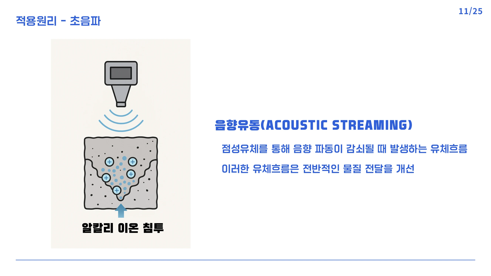

ULTRASONIC REALKALIZATION
초음파로 탐구한 콘크리트의 회복
탄산화된 콘크리트에 알칼리 이온을 더 깊고 빠르게 전달할 수 있을까. 초음파와 확산 모델을 연결해 보수 기법의 가능성을 탐구했습니다.
- YEAR / SEMESTER
- 3학년 1학기 · 2025
- COURSE
- 건축재료
- CONTRIBUTION
- 8조 팀과제
- SITE / SUBJECT
- 콘크리트 재알칼리화

THE IDEA
생각의 출발점
콘크리트의 탄산화는 내부의 알칼리성을 낮추고 철근 부식에 취약한 환경을 만듭니다. 기존 보수 방법을 비교한 뒤, 초음파의 공동현상과 음향 흐름을 이용해 알칼리 용액의 침투를 돕는 연구안을 제시했습니다.
- 01
재료의 열화에서 질문을 찾다
탄산화와 철근 부식의 관계를 정리하고, 표면 도포·단면 복구·전기화학적 재알칼리화의 적용 방식과 한계를 비교했습니다.
- 02
물리 현상을 보수 아이디어로
초음파가 유체의 이동을 촉진하는 원리에 착안해, 용액 패드와 초음파 장치를 결합하는 국부 처리 방식을 구상했습니다.
- 03
계산을 실험 계획으로 연결하다
Fick의 확산 모델에 가정한 확산계수를 대입해 침투 시간을 추정하고, 주파수·출력·처리시간을 설정한 후속 실험을 계획했습니다. 깊이별 효과와 수분 조건의 검증이 다음 과제입니다.
PROCESS & OUTCOME
과정과 결과
사진을 누르면 크게 볼 수 있습니다.